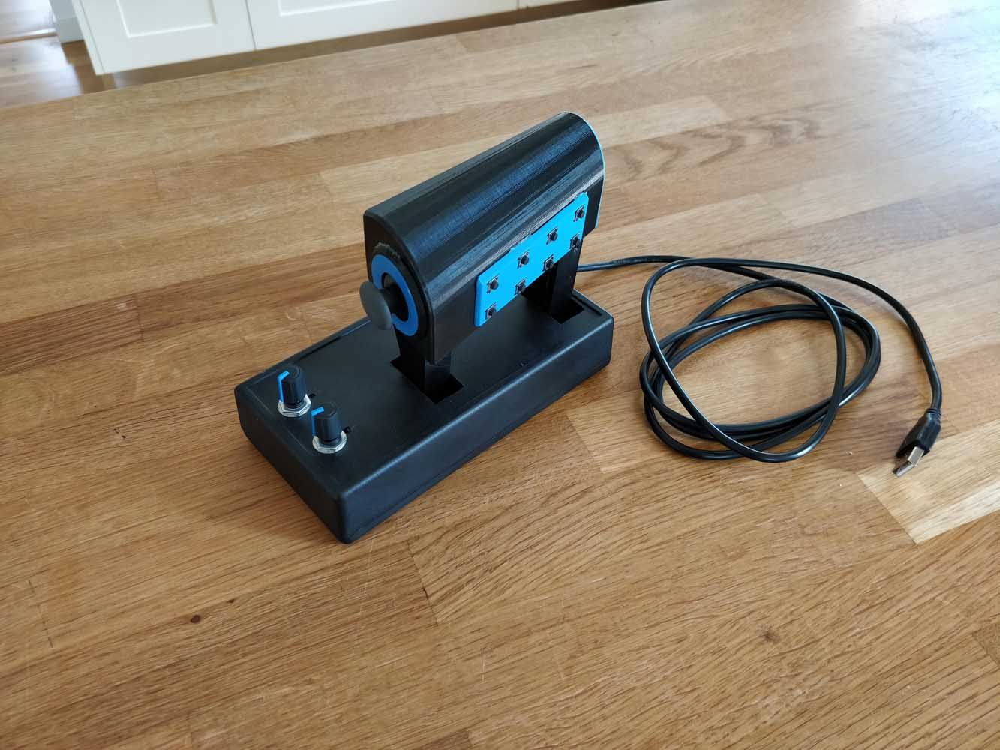
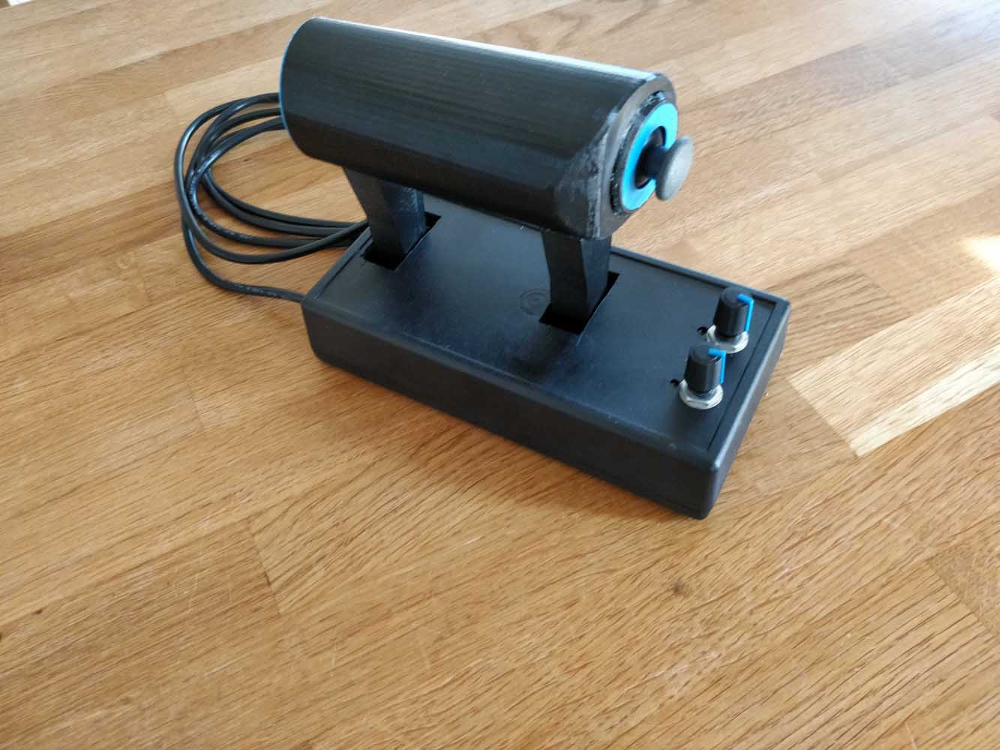
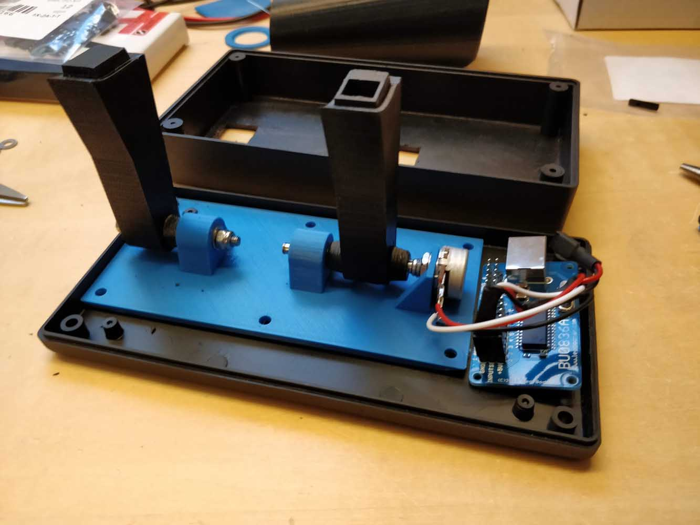

Throttle lever

This is a throttle lever specifically designed for Elite Dangerous, but can be used in other flight simulators as well. It is in blender around the Leo Bodnar BU0826A board, and features one major thrust axis, 8 pushbuttons, one small thumbstick with built-in pushbutton, and 2 rotary encoders. It is 3D-printed in PETG (polyethylene).


